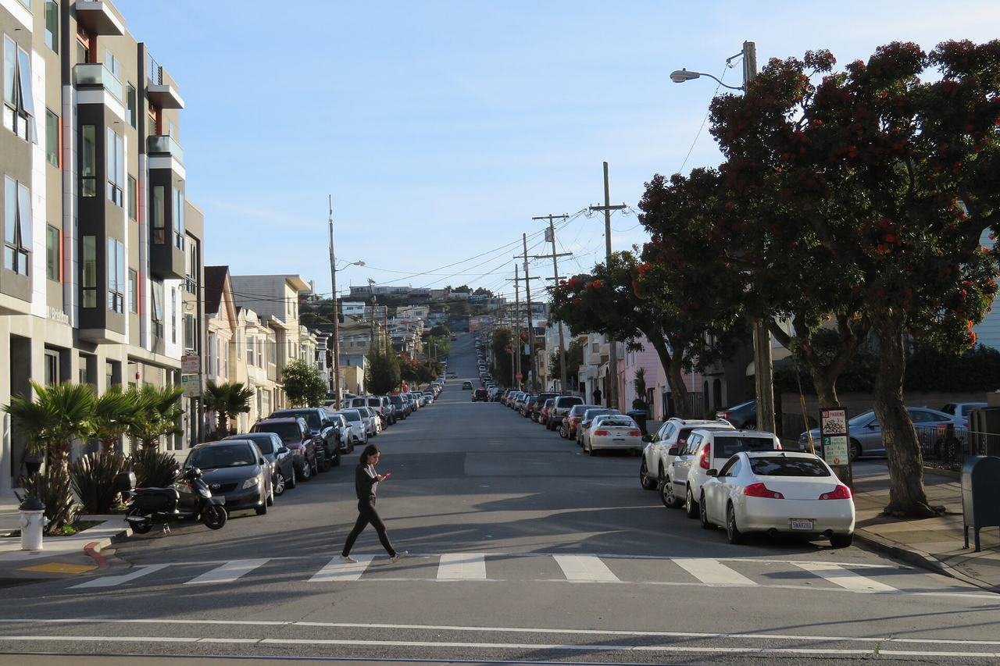

Oceanview / Merced / Ingleside
The southwestern corner of the city, bounded by Interstate 280 and Junipero Serra Boulevard. Ocean View was platted by homestead associations along the San Francisco and San Jose Railroad starting in the 1860s; Ingleside grew up around 19th-century roadhouses and the Ingleside Racetrack (1895–1905); Merced Heights, the ridge between them, was mostly built after World War II.

Map
Named buildings and landmarks

Streets documented so far
- Alemany Boulevard
1 building, built 2002. - Ashton Avenue
1 building, built 1923. - Belle Avenue
1 building, built 1947. - Beverly Street
1 building, built 1914. - Bright Street
1 building, built 1996. - Broad Street
4 buildings, built 1896–1946. - Capitol Avenue
1 building. - De Montfort Avenue
1 building, built 1939. - Ellington Avenue
1 building, built 1917. - Farallones Street
1 building, built 1948. - Faxon Avenue
1 building, built 1930. - Grafton Avenue
1 building, built 1915. - Granada Avenue
1 building, built 1989. - Josiah Avenue
1 building, built 1910. - Jules Avenue
2 buildings, built 1926–1927. - Lakeview Avenue
1 building, built 1916. - Lee Avenue
1 building, built 1910. - Lobos Street
1 building, built 1906. - Louisburg Street
1 building, built 1990. - Miramar Avenue
2 buildings, built 1905–1917. - Mission Street
1 building, built 1924. - Montana Street
1 building, built 1907. - Ocean Avenue
2 buildings, built 1900–1909; 2 in the Ocean Avenue Neighborhood Commercial District. - Orizaba Avenue
1 building. - Plymouth Avenue
1 building, built 1904. - Randolph Street
1 building, built 1907. - Sadowa Street
1 building, built 1910. - Sagamore Street
1 building, built 1890. - Summit Street
1 building, built 1936. - Thrift Street
1 building, built 1949. - Whittier Street
1 building, built 1905.
Parks and public spaces
- Alice Chalmers Playground
Neighborhood park or playground, 1.8 acres. - Cayuga Playground
Neighborhood park or playground, 3.6 acres. - Head & Brotherood Mini Park
Mini park, 22,651 sq ft. - Lessing & Sears Mini Park
Mini park, 7,405 sq ft. - Minnie and Lovie Ward Rec Center
Neighborhood park or playground, 11.1 acres. - Randolph & Bright Mini Park
Mini park, 5,663 sq ft.
Historic districts here
Adjacent neighborhoods
The Outer Mission adjoins south-east across Interstate 280 and Lakeshore west around Lake Merced. North across Ocean Avenue are West of Twin Peaks and the Ingleside Terraces tract, which took the Ingleside name from the racetrack that stood on it.